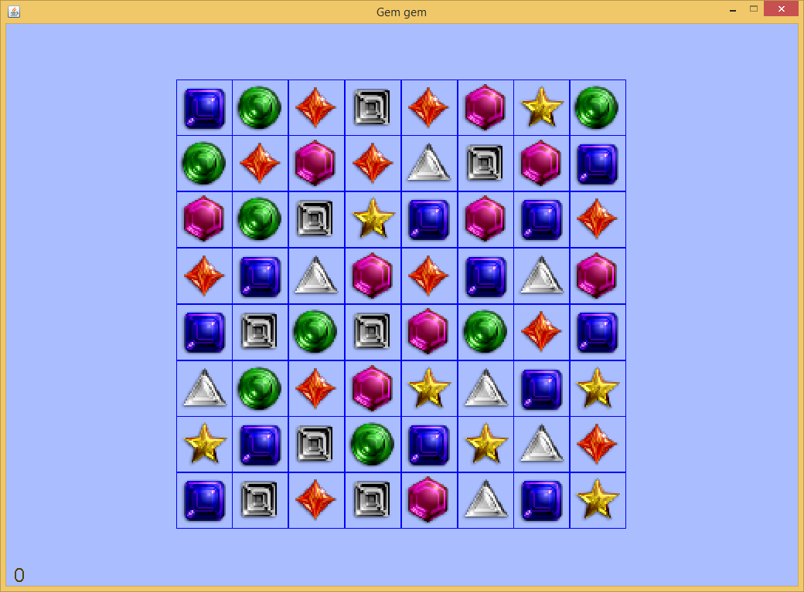
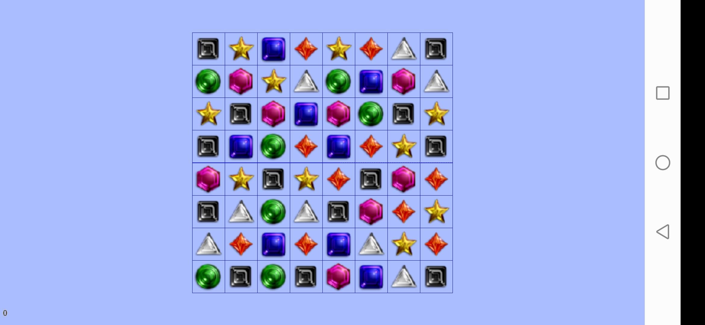

銷寶石遊戲在世界各地都很流行。這個遊戲很簡單，但是實現起來卻不那麽容易。困難在於如何顯示寶石交換位置和銷去後新的寶石落下來的動畫。請註意，銷寶石遊戲板上包含64個寶石。重新繪制顯示器上的所有寶石是一項計算量很大的任務。所以應該最大程度地減少直接在顯示器上進行的繪畫活動數量。所有靜態元素都應在緩沖的圖像中繪制，然後在屏幕更新事件中將緩沖的圖像整個地畫到屏幕上。
在代碼中，名為init_Board_And_Animate的函數將生成此緩沖圖像。此函數調用函數open_image_display生成圖像顯示句柄（也就是把圖像當作一個窗口進行繪畫的句柄）。與函數open_screen_display相似，返回的圖像顯示句柄可用於通過調用函數set_display_size和get_display_size來設置和返回圖像的大小，用於通過調用calculate_text_origin來計算文本的位置，並且可以接受由繪畫函數，例如draw_text和draw_oval，所觸發的繪畫事件。開發人員只需調用函數get_display_snapshot即可獲取圖像顯示句柄的快照。然後，通過調用函數draw_image將返回的圖像發布到屏幕上。該代碼段如下所示。
// initialize the game board and animate all the gems dropping down
// 初始化遊戲面板，並且模擬所有的寶石落下的過程
function init_Board_And_Animate(DISPLAYSURF, GEMIMAGES, BOARDRECTS, board, windowWidth, windowHeight, mvRate)
variable gemsImageDisplay = open_image_display(null)
set_display_size(gemsImageDisplay, windowWidth, windowHeight)
... ... // call painting functions to draw image display handle here, e.g. draw_image, draw_text and draw_point here. //在此處調用繪圖函數在圖像上繪制各種寶石
update_display(gemsImageDisplay)
variable gemsImage = get_display_snapshot(gemsImageDisplay, false, shrinkingRatio, shrinkingRatio)
... ...
draw_image("gemgem", DISPLAYSURF, gemsImage, 0, (windowHeight - progress)*shrinkingRatio, windowWidth*shrinkingRatio, windowHeight*shrinkingRatio, 0, 0, , windowWidth, progress)
MFP還提供了函數set_display_snapshot_as_bgrnd。此函數抓取圖像顯示句柄或者屏幕主窗口句柄的快照，並將該快照用作句柄自身的背景圖像。使用這個函數的好處是，調用此函數一次，顯示窗口的背景自動改變為當前窗口的樣子。這種方法比調用draw_image函數更快，並且背景圖像不受函數drop_old_painting_requests的影響。
當玩家移動寶石時，需要擦除移動或銷去的寶石的網格單元。為此，需要在緩沖圖像的顯示句柄上調用函數clear_rect。由於只有一小部分寶石在移動，因此直接將它們繪制在屏幕上（也就是遊戲主窗口上）。當寶石在新的單元格就位之後，將移動後的寶石重新繪制回到緩沖圖像上，調用函數get_display_snapshot以獲取緩沖的圖像句柄的更新快照，然後調用函數set_display_snapshot_as_bgrnd將新的快照設置為緩沖的圖像顯示句柄的背景圖像。
// first clear the two gems which will be swapped back from the background image of game's screen display
// 首先，把這兩個要交換回來的寶石從遊戲顯示窗口的背景圖案中抹掉
clear_rect("gemgem", gemsImageDisplay, [theX1, theY1], gemImgSize, gemImgSize)
clear_rect("gemgem", gemsImageDisplay, [theX2, theY2], gemImgSize, gemImgSize)
// update gemsImageDisplay and then take snapshot of this image display
// 更新圖像“顯示窗口”gemsImageDisplay，然後截取它的視圖
update_display(gemsImageDisplay)
gemsImage = get_display_snapshot(gemsImageDisplay, false, shrinkingRatio, shrinkingRatio) //this is static gems image.
firstSwappingGem[infoNum] = gameBoard[x1][y1]
secondSwappingGem[infoNum] = gameBoard[x2][y2]
// animate the gem swapping.
// 模擬寶石換位的動畫過程。
animate_Swapping_Gems(DISPLAYSURF, GEMIMAGES, BOARDRECTS, boardCopy, gemsImage, [firstSwappingGem, secondSwappingGem], [], score, _
gemImgSize, xMargin, yMargin, mvRate, up, down, left, right, rowAboveBoard)
// Swap the logic gems in the board data structure.
// 交換寶石在遊戲面板數據結構中的邏輯位置
gameBoard[x1][y1] = secondSwappingGem[infoNum]
gameBoard[x2][y2] = firstSwappingGem[infoNum]
// send draw request for the swapped gems
// 為這兩個交換位置的寶石發送繪制請求
draw_image("gemgem", gemsImageDisplay, GEMIMAGES[gameBoard[x1][y1]], theX1, theY1, scaledRatio, scaledRatio)
draw_image("gemgem", gemsImageDisplay, GEMIMAGES[gameBoard[x2][y2]], theX2, theY2, scaledRatio, scaledRatio)
// update gemsImageDisplay
// 更新圖像“顯示窗口”gemsImageDisplay
update_display(gemsImageDisplay)
... ...
set_display_snapshot_as_bgrnd(gemsImageDisplay, true, true)
示例代碼及其輔助文件已包含在壓縮包中。點擊此處以下載壓縮的遊戲示例包。解壓縮它，然後將game_examples文件夾復制到JMFPLang.jar文件旁邊的scripts文件夾中，如下圖所示。

該遊戲的源代碼腳本（即gemgem.mfps）位於game_examples文件夾的gemgem子文件夾中。它的輔助文件，即gem*.png，match*.wav和badstart.wav也位於同一文件夾中。要啟動該示例，只需啟動JMFPLang.jar文件，然後在命令行中運行gdi_test::game_test::gemgem::start_gemgem()。玩家還可以轉到JMFPLang.jar所在的文件夾，然後通過鍵入java -jar JMFPLang.jar -f scripts\game_examples\gemgem\gemgem.mfps在Windows Command / Powershell或Linux bash中運行腳本。
借助MFP語言對Android和安裝有JAVA的PC平臺的雙重支持，本遊戲既可以在安裝有JAVA的PC上運行，也可以在安卓設備上以應用或者獨立腳本的方式運行。以下是該遊戲在兩個不同的平臺上運行的截屏。上面的屏幕截屏是在Windows+JVM平臺上的運行效果，下面的屏幕截屏是在Android平臺上的運行效果。

